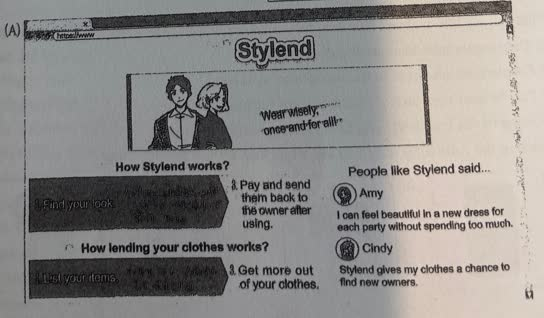
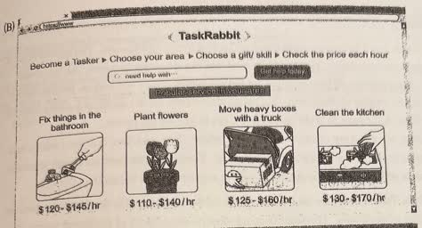
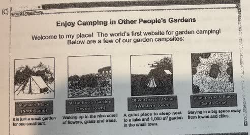
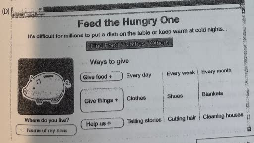
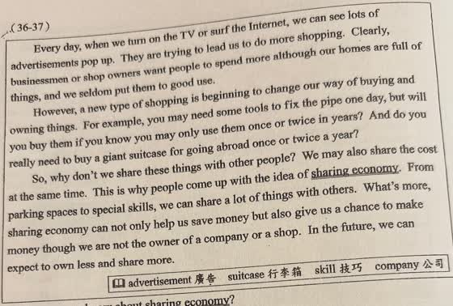
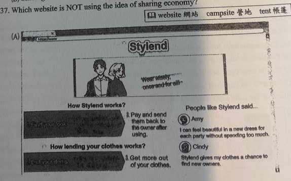

分享原卷｜第37題
完整原題
作答所需文章／材料
Every day, when we turn on the TV or surf the Internet, we can see lots of advertisements pop up. They are trying to lead us to do more shopping. Clearly, businessmen or shop owners want people to spend more although our homes are full of things, and we seldom put them to good use. However, a new type of shopping is beginning to change our way of buying and owning things. For example, you may need some tools to fix the pipe one day, but will you buy them if you know you may only use them once or twice in years? And do you really need to buy a giant suitcase for going abroad once or twice a year? So, why don't we share these things with other people? We may also share the cost at the same time. This is why people come up with the idea of sharing economy. From parking spaces to special skills, we can share a lot of things with others. What's more, sharing economy can not only help us save money but also give us a chance to make money though we are not the owner of a company or a shop. In the future, we can expect to own less and share more. 【原卷字詞】advertisement 廣告；suitcase 行李箱；skill 技巧；company 公司；website 網站；campsite 營地；tent 帳篷。 【四個網站選項】完整網頁圖像列於下方，包含網站名稱、步驟、服務、價格、描述與使用者留言。



先想一想，再查看答案、解說與原圖
逐項解析
| 選項與原句 | 判讀 | 句意與判斷理由 |
|---|---|---|
| (A) Stylend（見網站圖A） | 不選 | 透過衣物租用與出借，共用閒置衣物。 |
| (B) TaskRabbit（見網站圖B） | 不選 | 提供個人技能及時間的服務媒合，對應文中special skills。 |
| (C) Enjoy Camping in Other People's Gardens（見網站圖C） | 不選 | 提供自己的花園空間讓人露營，對應共享閒置空間。 |
| (D) Feed the Hungry One（見網站圖D） | 應選 | 主要內容是捐助弱勢者及志工救濟，與本文所舉共享經濟使用情境有別。 |
詳細說明與解題步驟
【文章完整中譯】
每天打開電視或上網，都會看到大量廣告，想引導我們多購物。商人、店主想讓人多花錢，雖然家中已堆滿物品，而且我們很少善加使用。
但新的購物方式正在改變購買、擁有物品的習慣。例如可能偶爾需要工具修水管，但若好幾年只用一兩次，還要買嗎？一年出國一兩次，真的需要買大行李箱嗎？
為什麼不和別人共用，也分攤費用？這就是本文所談的共享經濟。從停車空間到特殊技能，都能和別人分享。即使不是公司或商店老闆，也可能藉此省錢或賺錢。未來可以少擁有一些、多共享一些。
【四個網站的讀法與中文重點】
A Stylend：租用衣服，使用後付款並歸還衣主；也可把自己的衣物列出供人使用。Amy說每次聚會可以穿不同漂亮衣服又不花太多錢；Cindy說衣物能找到新使用者。對應共享閒置衣物。
B TaskRabbit：選地區、技能並比較每小時價格，服務包括修浴室用品、種花、搬重箱、清廚房。對應分享時間與技能。
C Enjoy Camping in Other People's Gardens：介紹他人花園中的營地，有單頂小帳篷空間、花草庭園、近湖草地與遠離城市的地點。對應共享私人空間。
D Feed the Hungry One：協助吃不飽、寒夜需要保暖的人，接受食物、衣服、鞋、毯子，也可說故事、剪髮、打掃當志工。核心是慈善救濟，與本文討論的閒置資源共同使用、分攤成本等情境不同，故選D。
【避免把選項判準擴大成錯誤規則】
題目是依本文比較這四個網站，不是訂出所有共享活動的唯一法定定義。不能只憑有免費、捐贈或沒有賺錢就作判斷，也不能把所有無償共享一概排除。應看網站主要提供的服務及本文舉例的關聯。
NOT表示要選不符合的一項。share the cost是分攤費用；not only...but also...連接不但與而且；though在此表示即使、雖然。
核對註記：完整文章、題幹及四個原卷網站圖像均保留；主要服務可讀並能判斷D。網站A深底按鈕少數細字未擅自補寫，解說不依賴這些細字，必要圖像在作答前顯示。教材課次未確認，歸綜合。
原圖（僅本題）

